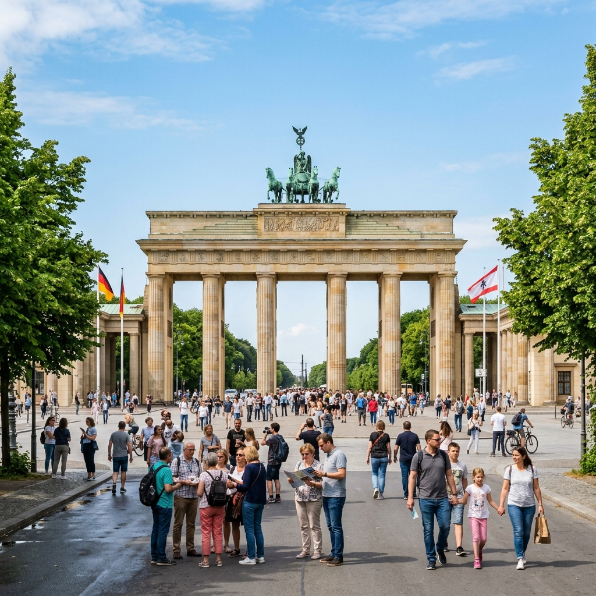

Mannlíf & MenningMannlíf og menning
Berlín er heimsborg með fjölbreyttu mannlífi og mikilli menningu. Íbúar Berlínar eru þekktir fyrir gestrisni og opið hugarfar gagnvart fólki úr öllum áttum heimsins. Í Berlín má finna fjölmörg listasöfn, leikhús, óperuhús og gallerí sem bjóða upp á fjölbreytt menningarefni. Borgin býr yfir einstakri andrúmslofti þar sem gamalt mætir nýju, og saga og framtíð blandast saman á heillandi hátt. Hverfi borgarinnar eru hvert með sinn karakter og sjarma sem gaman er að kynnast með því að rölta um götur þeirra og njóta lífsins á kaffihúsum og veitingastöðum.